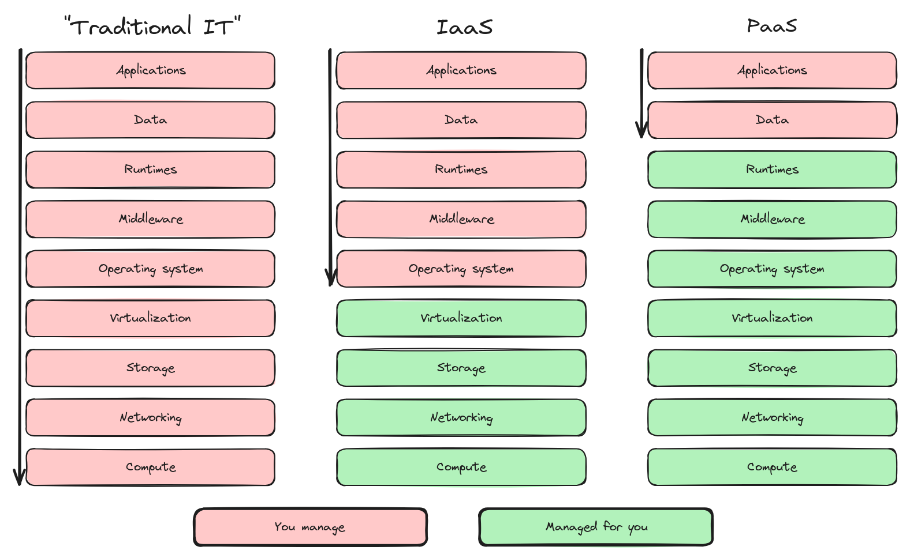
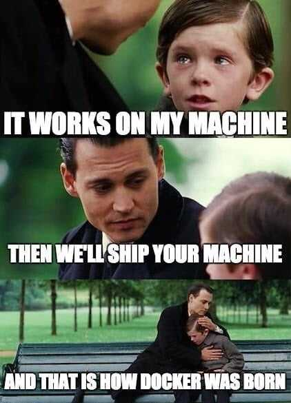

You build it, you run it... but what exactly?
“You build it, you run it”, easy to say, but, depending on your developer experience and platform capability… not at all easy. What am I expected to “build” and what should I “run”? Let’s take a look.
Let’s start with this overview that I show teams I engage with during their onboarding and where their responsibilities begin and what not to worry about (but can still affect them of course).

So you’re a new team with a great idea, and you get the green light from management to start building. In the traditional world you would need to take care of many things. Many of those things will contribute nothing to the actual value you are trying to create.
Imagine having to set up a server, from scratch, operating system, networks, security, runtimes, the whole lot of it. It might work with the right people and context, but if you mix in an IT department that governs the hardware and connections etc… you’ll be in for a tough time. And of course all of that stuff needs maintenance and updates, scaling, patches, fixes… And you’ve not built anything your users can actually use! We’re still talking about just an app, it’ll probably have a database and maybe other services that all need maintenance and updates.
Moving up a layer into a more virtualized world you can get rid of some of that busywork that goes into maintaining your own servers but that VM still needs all the work of patching and maintenance that any other server would need.
So if we say “you build it, you run it” in this context, the cognitive load is crazy, the team would need a lot of different skill sets to maintain and run everything.
One way to deal with all this was (still is in some places probably?) to offload all that server stuff to a separate IT department and let developers build the software. That split comes with a whole suite of problems, with the most prominent one being difference in goals between the two teams. What do admins want? Stable systems. What do developers want? Ship features. There will be constant conflict between the two, and it results in the classic “throw it over the wall” type of workflow that leads to heated arguments… “You’re not deploying it right!”, “Yeah well your app is broken!”
This is more “we build it, they run it”. Definitely don’t want that.
Let’s move up another layer, containers! Now we’re moving in the right direction. There’s no more “machine” to speak of, and we’re shipping neatly packaged software components that run on some kind of shared foundation that doesn’t really care what’s inside the container. The team is managing a lot less by this point. Looking at the first image, we’re in a sort of gray area between runtimes and middlewares.
We’re now at a level where it is becoming quite manageable but if your team is also running their own databases and what not with backups and patches and maintenance it can still be quite a bit of work.

I’d love to credit this meme, but I have no idea where it came from.
There’s just one problem though…
Where does all that work that we’ve been casually discarding actually go? That IT department that we mentioned earlier is one place it could go, but then we’ve just moved the work from one place to another. Handling all those apps and databases for any number of teams that exist in an organization is not realistic. We’re still not in a real position to proclaim “You build it, you run it”.
Platform engineering
Welcome to the current times, where organizations are realizing that in order to ship features, teams should focus on the right things. Which, in case of developer teams that build end-user products, is their apps, and their data. Additionally, that “other” work we came across will need to be seen as valuable, but for a different userbase. Those users? the developers building apps!
So, the platform that is hosting these apps is also a product. Just like a “normal” app, it should cater to the needs of its users. At the platform level, going from traditional IT to this new platform-as-product approach is a huge shift. This team running the platform will have their own responsibilities and ownership. Developers want to ship apps, what should the platform provide to facilitate this need? There should also be a clear boundary between what developer teams do, and what the platform team does. Platform teams should not have to know anything about the inner workings of the apps it is hosting. Same for backing services such as databases, the platform does not care about the table structures or queries, only that the databases are up and running and backed-up properly.
Standardizing things is key, it’s impossible to provide a bespoke service for many teams and still be able to manage and maintain everything. Same goes for automation, whatever manual processes exist, they should be automated. Not just to remove the manual toil of executing these tasks, but also to make them less error-prone, faster and repeatable. So what should be standardized? As with anything, it depends on the needs of the teams on the platform, but some good examples are authentication systems, databases, queues and other backing services of various types and sizes. These systems form a catalog of services that the developer teams can choose from.
At first, you might still have some manual steps here and there but at scale, the developer teams should be able to request services from the catalog as they desire. This way, responsibility ends up in the right places, developers own their apps and data, the platform owns the operation of the runtimes and services. A platform that offers these capabilities will be a complex product and will require substantial engineering power from a dedicated team but in return will provide the developer teams with the agility they need to be able to keep up with the ever-changing requirements of the business and end-users.
An example of such capabilities can be found in the hyperscale cloud providers such as AWS, Google Cloud and Azure. A broad catalog of services to choose from and use, but that’s also where it ends, any additional value creation should come from you as a user of those services.
So self-service is a key component, documentation for all that self-service stuff is also important. You don’t want to spend all your time answering questions that could be answered by a cookbook.
Something else is needed though, if you are going to be developing your platform as a product, the obvious thing would be to a have a product manager on the team. This will probably be the biggest switch for organizations that want to start building a platform for themselves. The platform will have its own backlog and iterations, demos, documentation. And why stop there? You might also want to have someone with design experience to do research on what features are most in demand. What about marketing? To grow your capability as a platform, you’ll need users. Spread the word on all the work you are doing to enable other teams. Does this all sound familiar? It should, because that’s what you do for any product.
And we can keep going! Golden paths! Make the right way to work on the platform very easy, but venturing off the beaten paths very hard. Standardized ways of deploying combined with application templates let developer teams build MVPs in a matter of days or even hours. Start facilitating an internal community that supports each other (and helps keep the support pressure low from the platform team!). The developer experience sky is the limit.
We’ve gone a bit off-topic with all this platform engineering and developer experience but, I think it’s safe to say that when you want to excite a team with “You build it, you run it”, it needs to be very clear what exactly is being built, and what is being run by the people you’re talking to. Cognitive load is a real thing if it becomes too high, happiness, performance, speed and efficiency will all suffer.
Building and running
In conclusion, telling teams “you build it, you run it” can only be successful if actually letting the team own and run everything is feasible or risk the team drowning in work that does not actually create any value for anyone. In practice, it really only works with a dedicated platform that does a lot of heavy lifting to give the teams that use the platform the freedom and agility to meet changing business and user requirements. The better this internal platform becomes the more developers it can service. And as with any product, start small and make well researched decisions when adding capabilities. Maybe set up an enabling team that can kickstart teams that are onboarding and provide them all the tools to be successful.
Setting all this up is a long process that also requires a shift in company culture that goes from siloed command-control structures to autonomous teams that actually build it, run it, and even own it.
Curious about ways to get there? Get in touch 🙂